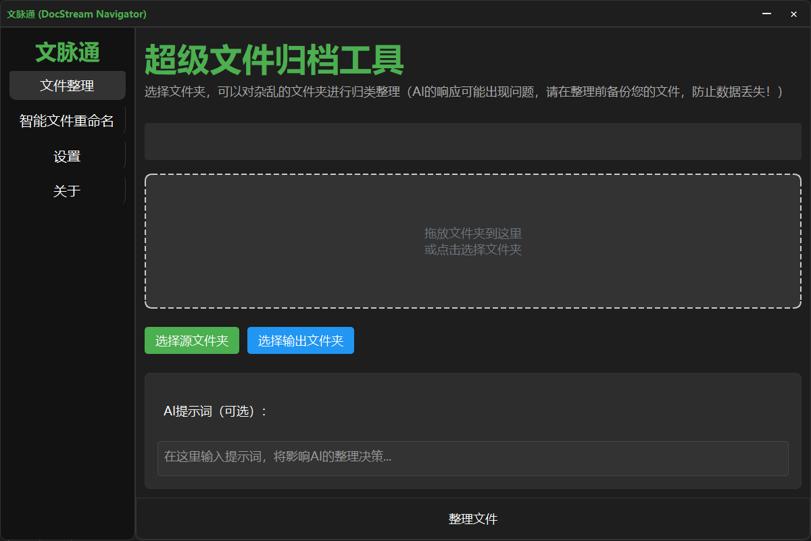
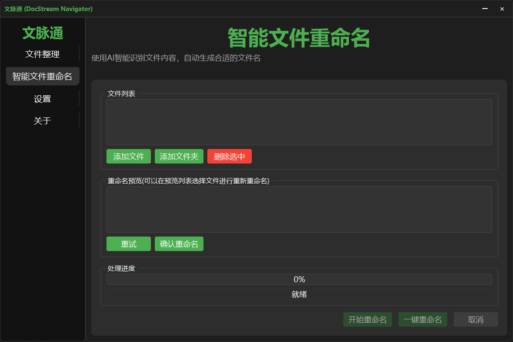
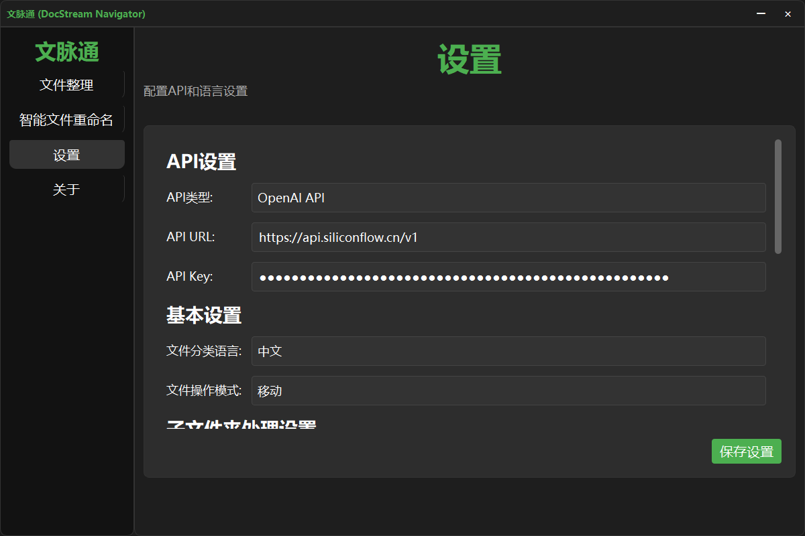

软件介绍
文脉通 (DocStream Navigator) 是一款基于人工智能技术的文件管理工具，能够智能识别文件内容，自动进行分类整理。本软件支持使用AI模型整理文件和重命名文件，支持多种文件类型的分析和处理，让文件管理变得更加轻松高效。
寓意：贯通文档信息的脉络，实现流畅高效的文件整理和调用。
主要特点
- 🤖 智能识别：使用先进的AI模型自动分析文件内容
- 🌏 多语言支持：支持中英文文件夹命名切换
- 🔄 灵活操作：支持文件复制或移动模式
- 📁 多格式支持：支持图片、视频、文档等多种文件格式
- ⚡ 高效处理：支持批量处理和自动化操作
- 🔧 自定义模型：支持用户自定义AI模型进行文件整理
- 📈 用户友好：简洁直观的界面设计，易于上手
功能说明
支持的文件类型
- 图像文件：支持常见图片格式，包括JPG、PNG、GIF等
- 视频文件：支持主流视频格式的分析
- 文档文件：支持Office文档、PDF等格式
- 压缩文件：支持ZIP等压缩包的分析
AI模型选择
软件提供多种AI模型选择（均可自定义模型）：
- 图像分析模型：Pro/Qwen/Qwen2-VL-7B-Instruct
- 文件分析模型：deepseek-ai/DeepSeek-R1-Distill-Qwen-7B
- 决策模型：deepseek-ai/DeepSeek-R1-Distill-Qwen-32B
语言设置
支持中英文文件夹命名切换，可在配置文件中设置language参数为中文或English。
使用教程
1. 文件整理功能界面

主界面用于文件整理操作，您可以在这里选择需要整理的文件或文件夹，并开始智能分类过程。
2. 智能文件重命名界面

智能重命名功能可以根据文件内容自动生成合适的文件名，提高文件管理效率。
3. 软件设置界面

在设置界面中，您可以配置API密钥、服务器地址、语言选项和文件操作模式等重要参数。
基本配置
软件的配置文件为config.ini，请在安装目录下找到并打开。
建议运行软件后在软件设置页进行设置
1. API配置
在软件设置页面配置：
- API密钥
- API服务器地址（默认：https://api.siliconflow.cn/v1）
2. 基本设置
在Settings部分配置：
- language：选择文件整理语言（English/中文）
- file_operation：选择文件操作模式（copy/move）
- enable_video_analysis：是否启用视频分析功能
操作流程
1. 启动软件
双击运行文脉通 (DocStream Navigator) 主程序。
2. 选择文件
点击界面上的"选择文件"按钮，选择需要整理的文件或文件夹。
3. 开始处理
确认设置后，点击"开始处理"按钮，软件将自动进行文件分析和整理。
风险提示
文件操作安全
- 建议首次使用时选择"复制"模式而非"移动"模式
- 处理重要文件前请先备份
- 确保有足够的磁盘空间
API使用注意事项
- 请妥善保管API密钥，不要泄露给他人
- 注意API调用频率限制
- 建议使用私有部署的API服务以保护数据安全
系统要求
- Windows 10或更高版本
- 稳定的网络连接
- 足够的系统内存